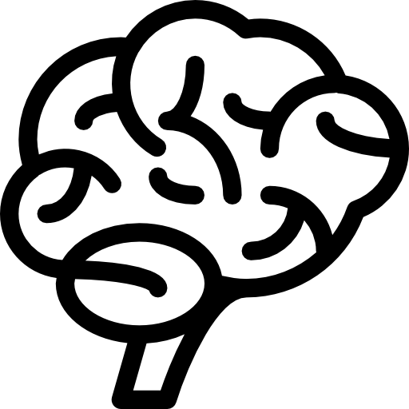

Точка зрения психофизиологии |
Menu |
|
|
Счастье - состояние абсолютной удовлетворённости жизнью, чувство наивысшего удовольствия, радости. Данный тип эмоций возникает у нас при испытании чувств веселья, удовлетворённости, возбуждения, облегчения, изумления и т.д. С точки зрения нейрофизиолога, счастье — это эмоция, а за способность испытывать эмоции отвечает головной мозг. То, какие именно эмоции мы будем испытывать, зависит от соотношения нескольких нейромедиаторов — химических веществ, при помощи которых нейроны головного мозга обмениваются информацией. Самую важную роль в ощущении счастья играют серотонин, дофамин, норадреналин и эндорфины. Все четыре нейромедиатора находятся в очень сложных взаимоотношениях друг с другом. Но в целом чем больше серотонина, дофамина и норадреналина доступно клеткам головного мозга и чем чаще у нас выделяются эндорфины, тем лучше наше настроение и тем мы счастливее. За синтез каждого нейромедиатора отвечают гены — так что наша способность испытывать счастье на 35–50% зависит от генов, которые мы унаследовали от родителей. Этих генов довольно много.  |
Счастье
|
|
| © Белинский Даниил Петрович, по всем вопросам пишите по адресу daniel616@htmlbook.ru | ||